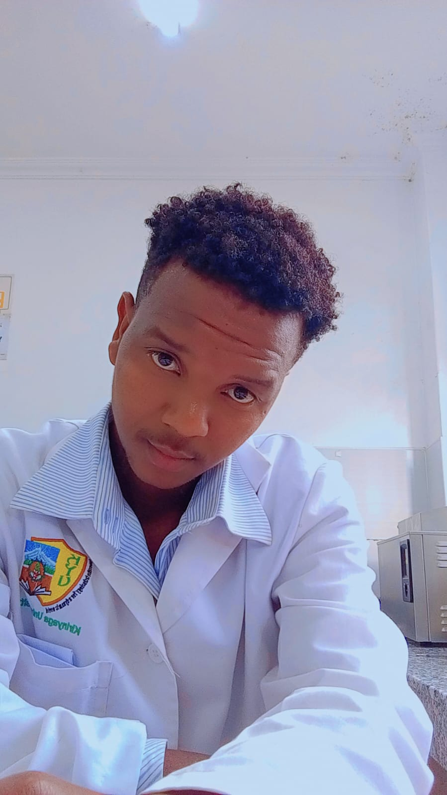
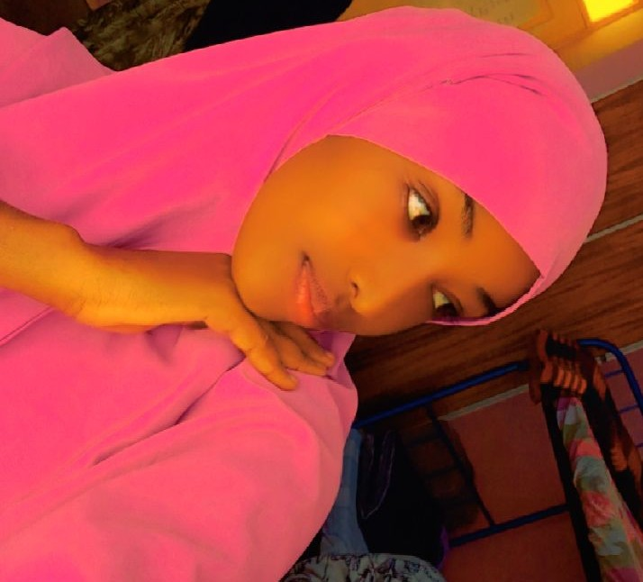
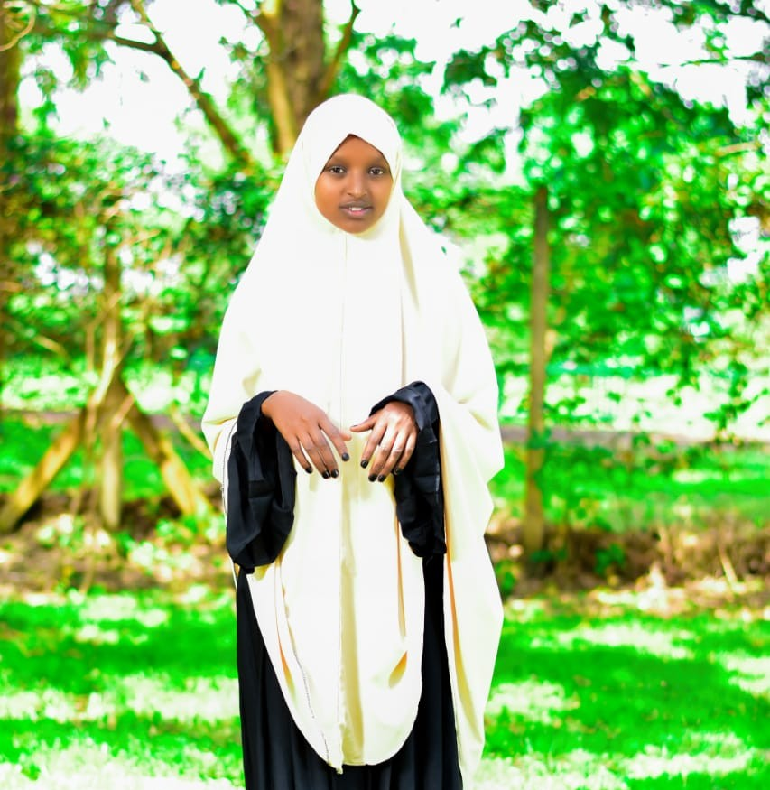
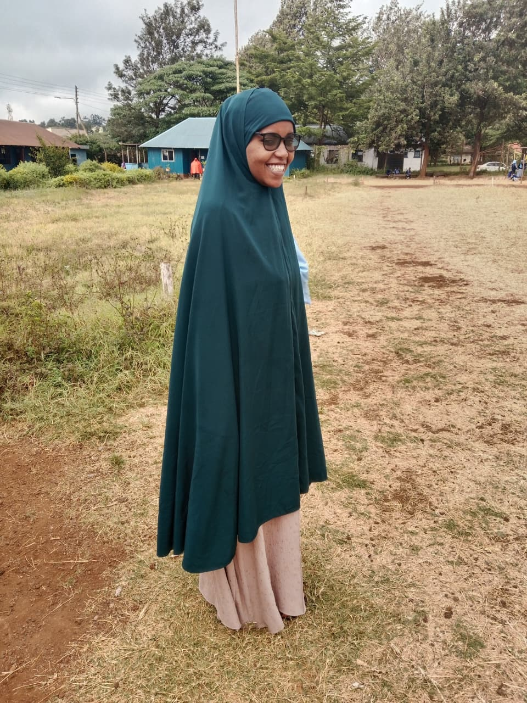

MAMU Sub-Committees
Click on any sub-committee leader's card to open their profile view and read their specific operational duties and responsibilities.

Mohammed Noor
Affairs Leader
BSc. Animal Health

Masooud
MAMU Football Captain
BSc. Education Science

Omar Choiga
Ustadh
BSc. Medical Microbiology

Ustadha Ladhan Ahmed
Ustadha
BSc. Education Science

Ustadha Mumina Halake
Ustadha
Bachelor of Education (Arts)

Ustadha Aisha Guyo
Ustadha
BSc. Education Arts